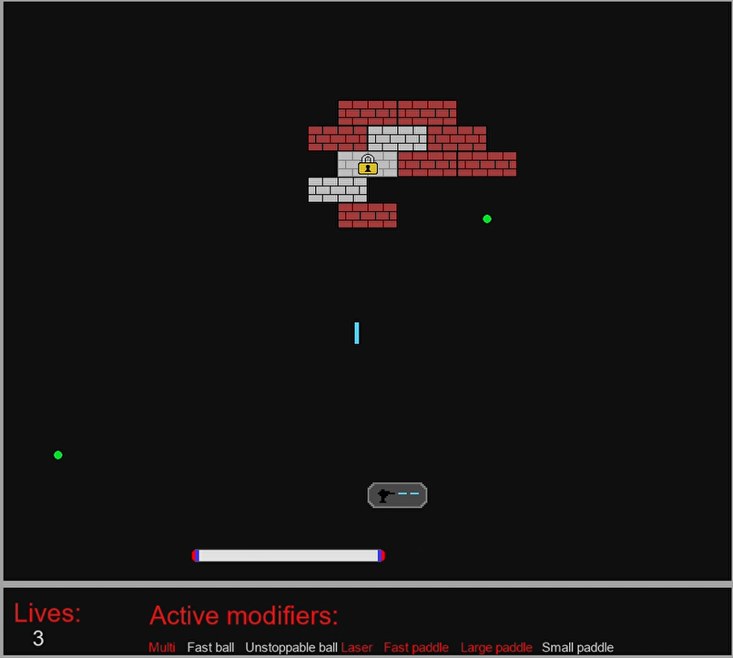
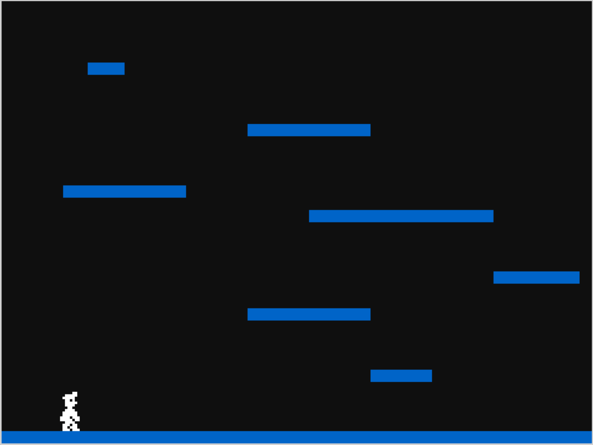
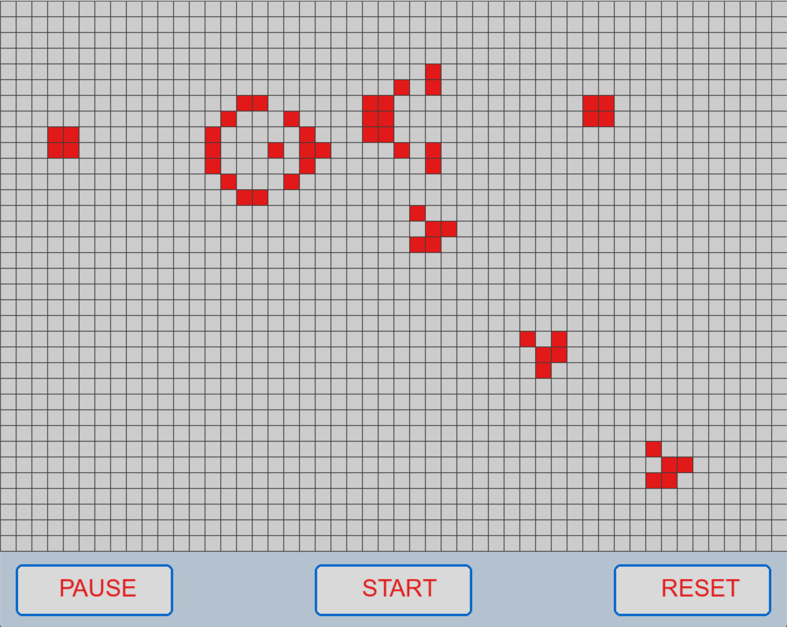

About me
◦ MPhys & BSc graduate from the University of Leeds
◦ Python developer
◦ Piano player
◦ Sports and fitness enthusiast
◦ Interested in many areas of Mathematics, Physics, Music and Technology
◦ Responsible for the development and test of Quantum Key Distribution systems (see
what is QKD?)
◦ Co-developer in self-conceived automation project: large-scale front and back-end Python tool for automating the test and optimisation of QKD systems. Designed to speed up and simplify the test/optimisation procedures
◦ Maintainer and developer of C++ control code and Linux control servers, including development of new algorithms and maintenance of PID loops
◦ Supervised other members of the team and distributed automation project tasks according to the team members' experience with Python
◦ Research science
◦ Python development: plotting, data analysis, scripting for automation, etc
◦ Game and physics engine development
◦ Electronics (e.g., Arduino), computers and other hardware
◦ 3D design for 3D printing
◦ Mathematical simulations, algorithms and general problem solving
◦ Windows and Android app development
◦ Music notation software and audio analysis
My approach to software development
◦ My journey with programming began at Leeds University during my Physics degree. During this degree, Python was used for data analysis, plotting and testing of physical models (i.e., through curve fitting to equations generated by a particular model). I quickly became interested in Python and software in general.
◦ During my time at Toshiba Europe Ltd, myself and another team member became developers in a self-conceived automation project. The aim was to test and optimise QKD systems - before I joined the team this was almost completely manual. This automation project contained approximately 20 Python scripts, all designed to optimise one part of the electronics/optics contained within the system. This project also contained a front-end so I became familiar with front-end development and best-practices. This tool is now the main method of testing the QKD systems and is used by staff unfamiliar with the inner workings of the system.
◦ I write clean, concise and well-commented code and I am particularly careful with repeated code.
◦ I explore programming outside of work, including trying other languages - please see below.
◦
Brickbreaker - 2D paddle and ball game where the objective is to break all the bricks on the screen. No online game development resources were used aside from the 2D engine (pygame) documentation, as a challenge for myself. Below you can see a screenshot of the third level, with multiple powerups active.

◦
Platformer - Began experimenting with 2D platform game physics. Not using any online resources to work out the dynamics of the player's movements, aside from the 2D engine (pygame) documentation, as a challenge for myself. This project is in the early stages. Below you can see a screenshot of the demo which currently allows the player to walk and interact with platforms.

◦
Conway's game of life - Implementation in Python. This was my first experience with 'game' development and I added some nice-to-have features such as the ability to click cells to 'resurrect' dead cells and start with unique patterns. Below you can see a demonstration of the so-called 'Glider gun' pattern.

• Automation
Web development with HTML, CSS and JS
Garmin watch face creation (Monkey C)
C++